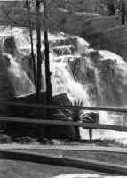

<!DOCTYPE HTML PUBLIC "-//W3C//DTD HTML 4.01 Transitional//EN"        "http://www.w3.org/TR/html4/loose.dtd">
<html lang="en">

<head>
<title>S. Koch:&nbsp; Mark's Ark - Henderson State University</title>
<meta http-equiv="Content-Language" content="en-us">
<meta http-equiv="Content-Type" content="text/html; charset=windows-1252">
<meta name="GENERATOR" content="Microsoft FrontPage 5.0">
<meta name="ProgId" content="FrontPage.Editor.Document">
<meta name="copyright" content="Copyright © 2002 Henderson State University">
<meta name="rating" content="General">
</head>

<body background="ARlogoborder.jpg" link="#006600" vlink="#006600" alink="#006600" bgcolor="#FFFFFF"><div style="background:#241b2e;color:#fff;font-family:Arial,sans-serif;font-size:13px;padding:7px 14px;text-align:center;position:relative;z-index:9999;"><a href="/books/arkansas-literary-forum" style="color:#fff;text-decoration:underline;">‚Üê Back to MarckBeggs.com</a> &nbsp;|&nbsp; <span style="opacity:.75;">Arkansas Literary Forum archive, preserved as originally published</span></div>

<div align="right">
  <table border="0" width="85%">
    <tr>
      <td width="100%" align="left">
        <blockquote>
          <p class="MsoNormal" style="mso-layout-grid-align:none;text-autospace:none"><b><font color="#006600" size="5"><span style="mso-bidi-font-size: 12.0pt; font-family: Arial">S.
          Koch</span></font><span style="font-size:18.0pt;mso-bidi-font-size:12.0pt;font-family:Arial"><o:p>
          </o:p>
          </span></b></p>
        </blockquote>
        <p class="MsoNormal" style="mso-layout-grid-align:none;text-autospace:none"><b><font size="4">Markís
        Ark</font><span style="font-size:12.0pt"><o:p>
        </o:p>
        </span></b></p>
        <p class="MsoNormal" style="mso-layout-grid-align:none;text-autospace:none"><font size="7"><b><a href="images/hendrixM2.jpg">
        </a><font color="#006600">T</font></b></font><span style="font-size:12.0pt">he
        state of Arkansas was born seven and a half months after Samuel
        &quot;Mark Twain&quot; Clemens.&nbsp;
        And although Mark Twain will rightly forever be associated with his
        native MissourióTwain was born Nov. 30, 1835, in Florida, Mo., while
        Arkansas, originally part of Missouri Territory, was admitted to the
        Union June 15, 1836óArkansas figures prominently in the writings of
        the American legend. And most prominently in Twainís most prominent
        novel. &nbsp;<o:p>
        </o:p>
        </span></p>
        <p class="MsoNormal" style="mso-layout-grid-align:none;text-autospace:none"><i><span style="font-size:12.0pt">Huckleberry
        Finn</span></i><span style="font-size:
12.0pt"> is not only considered Mark Twainís finest hour, it is widely
        regarded asóperhaps <i>the</i> great American novel, a masterpiece
        that encompasses manís inhumanity, and humanity, upon itself. Indeed, <i>Finn</i>
        is multi-layered, at once simple and complex, and a comedy and a
        tragedy, and is considered structurally flawed by some scholarsóall
        just like America herself.<o:p>
        </o:p>
        </span></p>
        <p class="MsoNormal" style="mso-layout-grid-align:none;text-autospace:none"><span style="font-size:12.0pt">Ernest
        Hemingway said &quot;all modern American literature comes from one book
        by Mark Twain called <i>Huckleberry Finn</i>.<span style="mso-spacerun: yes">
        </span>. .<span style="mso-spacerun: yes"> .&nbsp; </span>Itís the
        best book weíve had. All American writing comes from that.&quot; It is
        one of the most studied and controversial novels of all time. <o:p>
        </o:p>
        </span></p>
        <p class="MsoNormal" style="mso-layout-grid-align:none;text-autospace:none"><span style="font-size:12.0pt">&nbsp;Half
        of it takes place in Arkansas.<o:p>
        </o:p>
        </span></p>
        <p class="MsoNormal" style="margin-left:.5in;mso-layout-grid-align:none;
text-autospace:none"><span style="font-size:12.0pt">***<o:p>
        </o:p>
        </span></p>
        <p class="MsoNormal" style="mso-layout-grid-align:none;text-autospace:none"><span style="font-size:12.0pt">&quot;The
        stores and houses was most all old, shackly, dried-up frame concerns that
        hadnít ever been painted; they was set up three or four foot above
        ground on stilts, so as to be out of reach of the water when the river
        was overflowed. The houses had little gardens around them, but they
        didnít seem to raise hardly anything in them but jimpson-weeds, and
        sunflowers, and ash-piles and old curled-up boots and shoes, and pieces
        of bottles, and rags, and played out tinware. The fences was made of
        different kinds of boards, nailed on at different times; and they leaned
        out every which way, and had gates that didnít generly have but one
        hinge<span style="font-size:12.0pt;font-family:&quot;Times New Roman&quot;;
mso-fareast-font-family:&quot;Times New Roman&quot;;mso-ansi-language:EN-US;mso-fareast-language:
EN-US;mso-bidi-language:AR-SA">ó</span>a leather one. Some of the fences had
        been whitewashed some time or another, but the duke said it was in
        Columbusís time, like enough. There was generly hogs in the garden,
        and people driving them out.&nbsp;<o:p>
        </o:p>
        </span></p>
        <p class="MsoNormal" style="mso-layout-grid-align:none;text-autospace:none"><span style="font-size:12.0pt">&quot;All
        the stores was along one street. They had white domestic awnings in
        front, and the country-people hitched their horses to the awning-posts.
        There was empty dry-goods boxes under the awnings, and loafers roosting
        on them all day long, whittling them with their Barlow knives; and
        chawing tobacco, and gaping and yawning and stretchingóa mighty ornery
        lot. They generly had on yellow straw hats most as wide as an umbrella,
        but didnít wear no coats or waistcoats; they called one another Bill,
        and Buck, and Hank, and Joe, and Andy, and talked lazy and drawly, and
        used considerably many cuss-words. There was as many as one loafer
        leaning up against every awning-post, and he most always had his hands
        in his britches pockets, except when he fetched them out to lend a chaw
        of tobacco or scratch . . . .&nbsp;<o:p>
        </o:p>
        </span></p>
        <p class="MsoNormal" style="mso-layout-grid-align:none;text-autospace:none"><span style="font-size:12.0pt">&quot;All
        the streets and lanes was just mud; they warnít nothing else <i>but</i>
        mudómud as black as tar and nigh about a foot deep in some places, and
        two or three inches deep in all the places. The hogs loafed and grunted
        around everywheres. Youíd see a muddy sow and a litter come lazying
        along the street and whollop herself right down in the way, where folks
        had to walk around her, and sheíd stretch out and shut her eyes and
        wave her ears while the pigs was milking her, and look as happy as if
        she was on salary.&quot;&nbsp;<o:p>
        </o:p>
        </span></p>
        <p class="MsoNormal" style="mso-layout-grid-align:none;text-autospace:none"><span style="font-size:12.0pt">Also
        just like America, <i>Huckleberry Finn</i> is a parable of race. Since
        the initial 1884 release of <i>Adventures of Huckleberry Finn (Tom
        Sawyerís Comrade)</i>, it has sold more than 20 million copies in more
        than 50 languages.&nbsp;<o:p>
        </o:p>
        </span></p>
        <p class="MsoNormal" style="mso-layout-grid-align:none;text-autospace:none"><span style="font-size:12.0pt">Also
        nearly since then, misguided educators and parents have attempted to ban
        the book for its unflinching portrayal of the depths of human cruelty,
        the racism the era represents and its often coarse language. In the
        1950s, the NAACP called for the bookís removal from libraries and
        schools, and it had been attempted before and would be again. The word
        &quot;nigger&quot; appears more than 200 times in <i>Huckleberry Finn</i>,
        more than in any other of Twainís works. We know this because
        different groups have counted it over the years. But <i>Huckleberry Finn</i>
        is ultimately a tale of redemption, and, like so many of Twainís often
        disjointed and structurally flawed writings, the story seemed to take on
        a life of its own, with its author merely acting as an instrument.&nbsp;<o:p>
        </o:p>
        </span></p>
        <p class="MsoNormal" style="mso-layout-grid-align:none;text-autospace:none"><span style="font-size:12.0pt">Twain
        began the book in 1876, hoping to capitalize on the success of <i>Tom
        Sawyer</i>, writing to chapter 16. Three years later, he wrote to
        chapter 21, and wrote the Arkansas half of it in 1882 and 1883, while
        adding to the beginning. &nbsp;<o:p>
        </o:p>
        </span></p>
        <p class="MsoNormal" style="mso-layout-grid-align:none;text-autospace:none"><span style="font-size:12.0pt">Two
        Arkansas towns were created for <i>Finn</i>: Bricksville, described
        above, and Pikesville.&nbsp;<o:p>
        </o:p>
        </span></p>
        <p class="MsoNormal" style="mso-layout-grid-align:none;text-autospace:none"><span style="font-size:12.0pt">The
        King and the Duke, charlatans who take up with Jim and Huck, stage their
        &quot;Thrilling Tragedy of the Kingís Camelopard or the Royal
        Nonesuch!!!&quot; in Bricksville. The bottom line of the handbill
        &quot;was the biggest of all, which said: LADIES AND CHILDREN NOT
        ADMITTED &quot;There,&quot; says he, &quot;if that line donít fetch them, I
        donít know Arkansaw!&quot;&nbsp;<o:p>
        </o:p>
        </span></p>
        <p class="MsoNormal" style="mso-layout-grid-align:none;text-autospace:none"><span style="font-size:12.0pt">Although
        the fraudulent &quot;Royal Nonesuch&quot; is allowed by its angry
        audience to play another night in Bricksville so that the other
        townspeople can be equally duped, the King and the Duke receive their
        comeuppance in Pikesville, as described by Huck: &quot; . . . Here comes
        a raging rush of people with torches, and an awful whooping and yelling,
        and&nbsp;banging tin pans and blowing horns; and we jumped to one side
        to let&nbsp;them go by; and as they went by I see they had the king and
        the duke&nbsp;astraddle of a railóthat is, I knowed it <i>was</i> the
        king and the duke,&nbsp;though they was all over tar and feathers, and
        didnít look like nothing&nbsp;in the world that was humanójust
        looked like a couple of monstrous big&nbsp;soldier-plumes. Well, it made
        me sick to see it, and I was sorry for&nbsp;them poor pitiful rascals,
        it seemed like I couldnít ever feel any&nbsp;hardness against them any
        more in the world. It was a dreadful thing to&nbsp;see.&nbsp; Human beings <i>can</i>
        be awful cruel to one another.&quot;&nbsp;&nbsp;<o:p>
        </o:p>
        </span></p>
        <p class="MsoNormal" style="mso-layout-grid-align:none;text-autospace:none"><span style="font-size:12.0pt">Bricksville
        is said by Twain scholars and historians to be based on Napoleon, Ark.
        Napoleon was located below the confluence of the Mississippi and
        Arkansas rivers. As its location would suggest, Napoleon, mentioned in
        Twainís <i>The Gilded Age</i> as a stop of the <i>Boreas</i>, was a
        busy river port. Twain described it as &quot;a good big self-complacent
        town.&quot; After suffering heavy blows during the Civil War, Napoleon
        was washed away by the Arkansas River in 1874.&nbsp;<o:p>
        </o:p>
        </span></p>
        <p class="MsoNormal" style="mso-layout-grid-align:none;text-autospace:none"><span style="font-size:12.0pt">In
        Twainís <i>Life On The Mississippi</i>, published in 1883, Napoleon is
        the setting for a sketch called &quot;A Dying Manís Confession,&quot;
        and the narrator discovers to his dismay the disappearance of the town:&nbsp;<o:p>
        </o:p>
        </span></p>
        <blockquote>
          <p class="MsoNormal" style="mso-layout-grid-align:none;text-autospace:none"><span style="font-size:12.0pt">&quot;Come,
          what is this all about? Canít a man go ashore at Napoleon if he
          wants to?&quot;&nbsp;<o:p>
          </o:p>
          </span></p>
          <p class="MsoNormal" style="mso-layout-grid-align:none;text-autospace:none"><span style="font-size:12.0pt">&quot;Why,
          hang it, donít you know? There <i>isnít</i> any Napoleon any more.
          Hasnít been for years and years. The Arkansas River burst through
          it, tore it all to rags, and emptied it into the Mississippi!&quot;&nbsp;<o:p>
          </o:p>
          </span></p>
          <p class="MsoNormal" style="mso-layout-grid-align:none;text-autospace:none"><span style="font-size:12.0pt">&quot;Carried
          the whole town away?óbanks, churches, jails, newspaper offices,
          courthouse, theater, fire department, livery stableó<i>everything</i>?&quot;&nbsp;<o:p>
          </o:p>
          </span></p>
          <p class="MsoNormal" style="mso-layout-grid-align:none;text-autospace:none"><span style="font-size:12.0pt">&quot;Everything.
          Just a fifteen-minute job, or such a matter. Didnít leave hide nor
          hair, shred nor shingle, of it, except the fag-end of a shanty and one
          brick chimney. This boat is paddling along right now where the
          dead-center of that town used to be; yonder is the brick chimneyóall
          thatís left of Napoleon. These dense woods on the right used to be a
          mile back of the town. Take a look behind youóupstreamónow you
          begin to recognize the country, donít you?&quot;&nbsp;<o:p>
          </o:p>
          </span></p>
          <p class="MsoNormal" style="mso-layout-grid-align:none;text-autospace:none"><span style="font-size:12.0pt">&nbsp;&quot;Yes,
          I do recognize it now. . . .&quot;&nbsp;</span></p>
          <p class="MsoNormal" style="mso-layout-grid-align:none;text-autospace:none"><span style="font-size:12.0pt">&quot;Yes,
          it was an astonishing thing to see the Mississippi rolling between
          unpeopled shores and straight over the spot where I used to see a good
          big self-complacent town twenty years ago. Town that was county seat
          of a great and important county; town with a big United States Marine
          hospital; town of innumerable fights ñ an inquest every day; town
          where I used to know the prettiest girl, and the most accomplished in
          the whole Mississippi Valley; town where we were handed the first
          printed news of the <i>Pennsylvania</i>ís mournful disaster a
          quarter of a century ago; a town no moreóswallowed up, vanished,
          gone to feed the fishes; nothing left but a fragment of a shanty and a
          crumbling brick chimney!&quot;<o:p>
          </o:p>
          </span></p>
        </blockquote>
        <p class="MsoNormal" style="mso-layout-grid-align:none;text-autospace:none"><span style="font-size:12.0pt">Twain
        had a special interest in remembering the steamboat <i>Pennsylvania</i>,
        which exploded in 1858. He sailed the boat while learning to captain and
        his brother died on it, nearly a quarter-century before he wrote <i>Life
        on the Mississippi</i>. On his first voyage, from St. Louis to New
        Orleans in November 1857, the <i>Pennsylvania</i> struck the <i>Vicksburg</i>
        and was repaired in New Orleans. Twain rejoined in February 1858, and
        soon so did his younger brother Henry. In early June, Twain got into an
        argument with the shipís pilot, and left the helm to beat the man.
        Despite this uncaptain-like conduct, the captain offered to put the
        pilot ashore and put Twain in his spot, but Twain was unready. Instead,
        he departed the boat in New Orleans June 5 with plans to join it again
        when the offensive pilot was replaced with someone more suitable, with
        Henry still on board as mud clerk, unpaid. On June 13, 70 miles south of
        West Memphis, the <i>Pennsylvania</i>ís boilers exploded, killing both
        the pilot and Twainís brother. Twain began to known by some as
        &quot;Lucky&quot; hereafter.&nbsp;<o:p>
        </o:p>
        </span></p>
        <p class="MsoNormal" style="mso-layout-grid-align:none;text-autospace:none"><span style="font-size:12.0pt">Another
        then-bustling Arkansas river port, Helena, is described in <i>Life On
        the Mississippi</i> as occupying &quot;one of the prettiest situations
        on the Mississippi. Her perch is the last, the southernmost group of
        hills which one sees on that side of the river. In its normal condition
        it is a pretty town; but the flood (or possible the seepage) had lately
        been ravaging it; whole streets of houses had been invaded by the muddy
        water, and the outsides of the buildings were still belted with a broad
        stain extending upward from the foundations. Stranded and discarded cows
        were all about; plank sidewalks on stilts four feet high were loose and
        ruinous,óa couple of men trotting along then could make a blind man
        think a cavalry charge was coming; everywhere the mud was black and
        deep, and in many places malarious pools of stagnant water were
        standing. A Mississippi inundation is the next most wasting and
        desolating infliction to a fire.&nbsp;<o:p>
        </o:p>
        </span></p>
        <p class="MsoNormal" style="mso-layout-grid-align:none;text-autospace:none"><span style="font-size:12.0pt">&quot;We
        had an enjoyable time here, on this sunny Sunday: two full hoursí
        liberty ashore while the boat discharged freight. In the back streets
        but few white people were visible, but there were plenty of colored
        folkómainly women and girls; and almost without exception upholstered
        in bright new clothes of swell and elaborate style and cut ñ a glaring
        and hilarious contrast to the mournful mud and the pensive puddles.&nbsp;<o:p>
        </o:p>
        </span></p>
        <p class="MsoNormal" style="mso-layout-grid-align:none;text-autospace:none"><span style="font-size:12.0pt">&quot;Helena
        is the second town in Arkansas, in point of populationówhich is placed
        at five thousand. The country about is exceptionally productive. Helena
        has a good cotton trade; handles from forty to sixty thousand bales
        annually; she has machine shops and wagon factoriesóin brief has
        $1,000,000 invested in manufacturing industries. She has two railways,
        and is the commercial center of a broad and prosperous regions. Her
        gross receipts of money, annually, from all sources, are placed by the
        New Orleans <i>Times-Democrat</i> at $4,000,000.&quot;&nbsp;<o:p>
        </o:p>
        </span></p>
        <blockquote>
          <p class="MsoNormal" style="mso-layout-grid-align:none;text-autospace:none"><span style="font-size:12.0pt">***&nbsp;<o:p>
          </o:p>
          </span></p>
        </blockquote>
        <p class="MsoNormal" style="mso-layout-grid-align:none;text-autospace:none"><span style="font-size:12.0pt">&quot;It
        being of recent birth,&quot; Twain wrote he had not heard of Arkansas
        City in <i>Life on the Mississippi</i>.&nbsp;<o:p>
        </o:p>
        </span></p>
        <p class="MsoNormal" style="mso-layout-grid-align:none;text-autospace:none"><span style="font-size:12.0pt">&quot;It
        was born of a railway; the Little Rock, Mississippi River and Texas
        railroad touches the river there. We asked a passenger who belonged
        there what sort of place it was. &quot;Well,&quot; said he, after
        considering, and with the air of one who wished to take time and be
        accurate, &quot;itís a hell of a place.&quot; A description which was
        photographic for exactness. There were several rows and clusters of
        shabby frame houses, and a supply of mud sufficient to insure the town
        against a famine in that article for a hundred years; for the overflow
        had but lately subsided. There were stagnant ponds in the streets, here
        and there, and a dozen rude scows were scattered about, lying aground
        wherever they happened to have been when the waters drained off and
        people could do their visiting and shopping once more. Still, it is a
        thriving<span style="mso-spacerun: yes">&nbsp; </span>place, with a rich
        country behind it, an elevator in front of it, and also a big fine mill
        for the manufacture of cottonseed oil. I had never seen this kind of a
        mill before. Cottonseed was comparatively valueless in my time; but it
        is worth $12 or $13 a ton now, and none of it is thrown away. The oil
        made from it is colorless, tasteless, and almost if not entirely
        odorless. It is claimed that it can, by proper manipulation, be made to
        resemble and perform the office of any and all oils, and be produced at
        a cheaper rate than the cheapest of the originals. Sagacious people
        shipped it to Italy, doctored it and brought back as olive oil. This
        trade grew to be so formidable that Italy was obliged to put a
        prohibitory impost upon it to keep it from working serious injury to her
        oil industry.&quot;&nbsp;<o:p>
        </o:p>
        </span></p>
        <p class="MsoNormal" style="mso-layout-grid-align:none;text-autospace:none"><span style="font-size:12.0pt">And,
        further along the river, &quot;Island 92 belongs to Arkansas. The river
        moved it over and joined it to Mississippi. A chap established in a
        whisky shop there, without a Mississippi license, and enriched himself
        upon Arkansas protection (where no license was in those days
        required).&quot; <span style="mso-spacerun: yes">&nbsp;</span><o:p>
        </o:p>
        </span></p>
        <p class="MsoNormal" style="mso-layout-grid-align:none;text-autospace:none"><span style="font-size:12.0pt">Arkansas
        is mentioned in several other of Twainís writings, including:</span></p>
        <ul>
          <li>
            <p class="MsoNormal" style="mso-layout-grid-align:none;text-autospace:none"><i><span style="font-size:12.0pt">Tom
            Sawyer, Detective</span></i><span style="font-size:12.0pt"> (1896)<o:p>
            </o:p>
            </span></li>
        </ul>
        <p class="MsoNormal" style="mso-layout-grid-align:none;text-autospace:none"><span style="font-size:12.0pt">The
        setting for <i>Tom Sawyer, Detective</i>, like the conclusion of <i>Huckleberry
        Finn</i> and <i>Huck Finn and Tom Sawyer Among the Indians</i>, is the
        Phelphesí Arkansas farm. The farm is described as being near fictional
        Pikesville, Ark., and a &quot;little bit of a shabby village&quot; in <i>Huckleberry
        Finn</i>; while <i>Tom Sawyer, Detective</i> doesnít mention
        Pikesville by name. <o:p>
        </o:p>
        </span></p>
        <ul>
          <li>
            <p class="MsoNormal" style="mso-layout-grid-align:none;text-autospace:none"><i><span style="font-size:12.0pt">Huck
            Finn and Tom Sawyer Among the Indians</span></i><span style="font-size:12.0pt">
            (1884) <o:p>
            </o:p>
            </span></li>
        </ul>
        <p class="MsoNormal" style="mso-layout-grid-align:none;text-autospace:none"><span style="font-size:12.0pt">The
        unfinished sequel to <i>Huckleberry Finn</i>, this story begins where <i>Huckleberry
        Finn</i> left off ó in Arkansas on the farm of Aunt Sally Phelps.<o:p>
        </o:p>
        </span></p>
        <ul>
          <li>
            <p class="MsoNormal" style="mso-layout-grid-align:none;text-autospace:none"><i><span style="font-size:12.0pt">The
            Tragedy of Puddínhead Wilson</span></i><span style="font-size:12.0pt">
            (1894)<o:p>
            </o:p>
            </span></li>
        </ul>
        <p class="MsoNormal" style="mso-layout-grid-align:none;text-autospace:none"><span style="font-size:12.0pt">In
        Twainís last American novel, Arkansas is mostly represented as
        &quot;down the river,&quot; a fearsome place where the slaveholders are
        much more harsh than in Missouri. When the owner of slaves caught
        stealing agrees not to sell them down the river, only &quot;here,&quot;
        . . . &quot;The culprits flung themselves prone, in an ecstasy of
        gratitude, and kissed his feet, declaring that they would never forget
        his goodness and never cease to pray for him as long as they lived. They
        were sincere, for like God he had stretched forth his mighty hand and
        closed the gates of hell against them. He knew, himself, that he had
        done a noble and gracious thing, and he was privately well pleased with
        his magnamanity; and that night he set the incident down in his diary,
        so that his son might read it in after years and be thereby moved to
        deeds of gentleness and humanity himself.&quot;&nbsp;<o:p>
        </o:p>
        </span></p>
        <p class="MsoNormal" style="mso-layout-grid-align:none;text-autospace:none"><span style="font-size:12.0pt">After
        being sold down the river by her son &quot;to an Arkansas cotton planter
        for a trifle over six hundred dollars,&quot; <i>Puddínhead Wilson </i>character
        Roxy escapes and returns to Missouri, and chastises her son:&nbsp;<o:p>
        </o:p>
        </span></p>
        <p class="MsoNormal" style="margin-left:.5in;mso-layout-grid-align:none;
text-autospace:none"><span style="font-size:12.0pt">&quot;Sell a pusson down de
        river ó <i>down de river!</i> ó for de besí! I wouldnít treat a
        dog so! I is all broke down en wore out, now, en so I reckon ot ainít
        in me to storm arouní no mo,í like I used to when I ëuz trompled
        on en ëbused. I donít know ñ but maybe itís so. Leastways, Iís
        suffered so much dat mouriní seem to come moí handy to me now den
        stormin.í&quot;&nbsp;</span></p>
        <ul>
          <li>
            <p class="MsoNormal" style="mso-layout-grid-align:none;text-autospace:none"><i><span style="font-size:12.0pt">The
            Innocents Abroad, or The New Pilgrimsí Progress; Being Some
            Account of the Steamship Quaker Cityís Pleasure Excursion to
            Europe and the Holy Land</span></i><span style="font-size:12.0pt">
            (1869)&nbsp;</span></li>
        </ul>
        <p class="MsoNormal" style="mso-layout-grid-align:none;text-autospace:none"><span style="font-size:12.0pt">In
        <i>Innocents Abroad</i>, Mark Twainís first book, Venice is compared
        ó unfavorably, it would seem ó to an &quot;overflowed Arkansas
        town.&quot;<o:p>
        </o:p>
        </span></p>
        <ul>
          <li>
            <p class="MsoNormal" style="mso-layout-grid-align:none;text-autospace:none"><i><span style="font-size:12.0pt">The
            American Claimant</span></i><span style="font-size:12.0pt"> (1892)<o:p>
            </o:p>
            </span></li>
        </ul>
        <p class="MsoNormal" style="mso-layout-grid-align:none;text-autospace:none"><span style="font-size:12.0pt">At
        the beginning of the storyóTwainís sixth novelóthe deaths of Simon
        Lathers and his twin brother occur in a fictional Arkansas town:&nbsp;<o:p>
        </o:p>
        </span></p>
        <blockquote>
          <p class="MsoNormal" style="mso-layout-grid-align:none;text-autospace:none"><span style="font-size:12.0pt">&quot;In
          the environs of the hamlet of Duffyís Corners in the grand old State
          of Arkansas<span style="mso-spacerun: yes">&nbsp; </span>. . . both
          being crushed by a log at a smokehouse raising, owing to carelessness
          on the part of all present, referable to over-confidence and gaiety
          induced by overplus of sour-mash.&quot;<o:p>
          </o:p>
          </span></p>
        </blockquote>
        <ul>
          <li>
            <p class="MsoNormal" style="mso-layout-grid-align:none;text-autospace:none"><i><span style="font-size:12.0pt">Connecticut
            Yankee</span></i><span style="font-size:12.0pt"> (1889)<o:p>
            </o:p>
            </span></li>
        </ul>
        <p class="MsoNormal" style="mso-layout-grid-align:none;text-autospace:none"><span style="font-size:12.0pt">In
        the novel that gave Franklin D. Roosevelt the phrase &quot;new
        deal,&quot; Hank Morgan compares the <i>Camelot Weekly Examiner Hosanna</i>
        to &quot;Arkansas journalism.&quot;<o:p>
        </o:p>
        </span></p>
        <ul>
          <li>
            <p class="MsoNormal" style="mso-layout-grid-align:none;text-autospace:none"><i><span style="font-size:12.0pt">Roughing
            It</span></i><span style="font-size:12.0pt"> (1872) <o:p>
            </o:p>
            </span></li>
        </ul>
        <p class="MsoNormal" style="mso-layout-grid-align:none;text-autospace:none"><span style="font-size:12.0pt">This
        book features a character named Arkansas. A &quot;stalwart
        ruffian,&quot; Arkansas personifies the rough and rowdy post-territorial
        reputation of his namestate.&nbsp;
        Stranded by bad weather at an inn, the narrator witnesses Arkansas,
        &quot;a stalwart ruffian<span style="mso-spacerun: yes">&nbsp; </span>.
        . . who carried two revolvers in his belt and a bowie-knife projecting
        from his boot<span style="mso-spacerun: yes">&nbsp; </span>. . .<span style="mso-spacerun: yes">&nbsp;
        </span>always drunk and always suffering for a fight,&quot; goads the
        innís owner into a fist fight: &quot;<span style="mso-spacerun: yes">&nbsp;
        </span>. . .<span style="mso-spacerun: yes">&nbsp; </span>Arkansas began
        to shoot and the landlord to clamber over benches, men, and every sort
        of obstacle in a frantic desire to escape. In the midst of the wild
        hubbub the landlord crashed through a glass door, and as Arkansas
        charged after him the landlordís wife suddenly appeared in the doorway
        and confronted the desperado with a pair of scissors! Her fury was
        magnificent. Ö While the wondering crowd closed up and gazed, she gave
        him such another tongue-lashing as never a cowed and shame-faced raggart
        got before, perhaps! As she finished and retired victorious, a roar of
        applause shook the house and every man ordered ëdrinks for the crowdí
        in one and the same breath.&quot;&nbsp;<o:p>
        </o:p>
        </span></p>
        <p class="MsoNormal" style="mso-layout-grid-align:none;text-autospace:none"><span style="font-size:12.0pt">&quot;The
        lesson was entirely sufficient. The reign of terror was over, and the
        Arkansas domination broken for good. During the rest of the season of
        island captivity, there was one man who sat apart in a state of
        permanent humiliation, never mixing in any quarrel or uttering a boast,
        and never resenting the insults the once cringing crew now constantly
        leveled at him, and that man was Arkansas.&quot;&nbsp;<o:p>
        </o:p>
        </span></p>
        <p class="MsoNormal" style="mso-layout-grid-align:none;text-autospace:none"><span style="font-size:12.0pt">The
        Arkansas excerpt appears in some short story anthologies as &quot;Mr.
        Arkansas.&quot; Twain began to expand and dramatize Arkansasís scene
        from <i>Roughing It</i> for a play, but did not complete the project. <o:p>
        </o:p>
        </span></p>
        <p>&nbsp;
        <p align="right"><font size="2">(Photo by M. Hendrix)</font>
        </td>
    </tr>
  </table>
</div>

<p align="center"><a title="Select to go to the Home Page" href="2000.html">HOME</a></p>

</body>

</html>